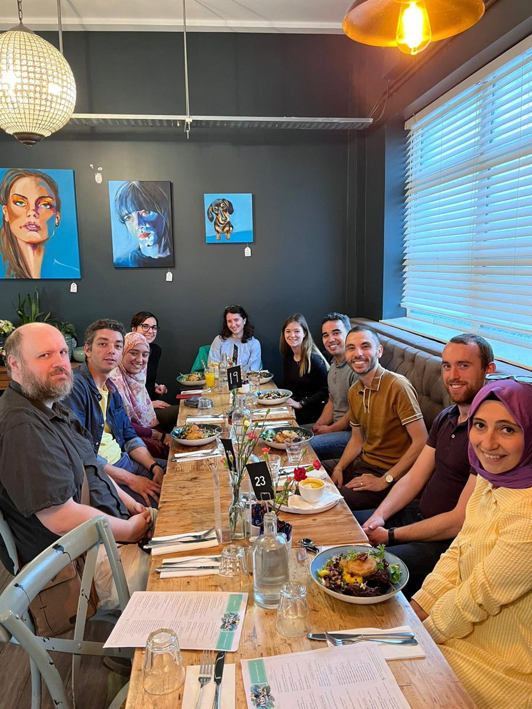

Human-Centred AI Research Group
The Human-Centred AI (HAI) Research Group at MTU studies how humans and AI interact across languages, cultures and application domains, with the aim of building AI systems that are reliable, trustworthy, interpretable, culturally aware and human-centred.
Themes
- Human-centred evaluation and evaluation science
- Multilingual and culturally aware AI
- Trustworthy AI, safety and governance
- Reasoning and reasoning stability
- AI for healthcare, biology and genomics
Collaboration and supervision
The group welcomes prospective PhD students, postdoctoral researchers and collaborators whose interests align with these themes. Enquiries via the contact page.
